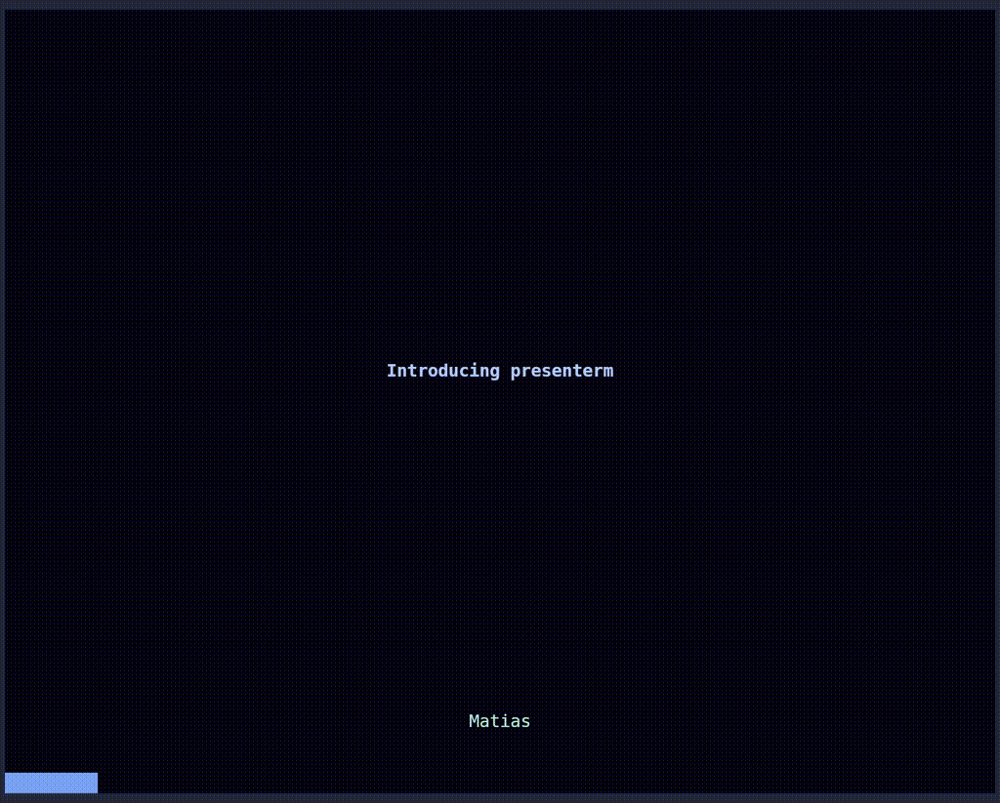
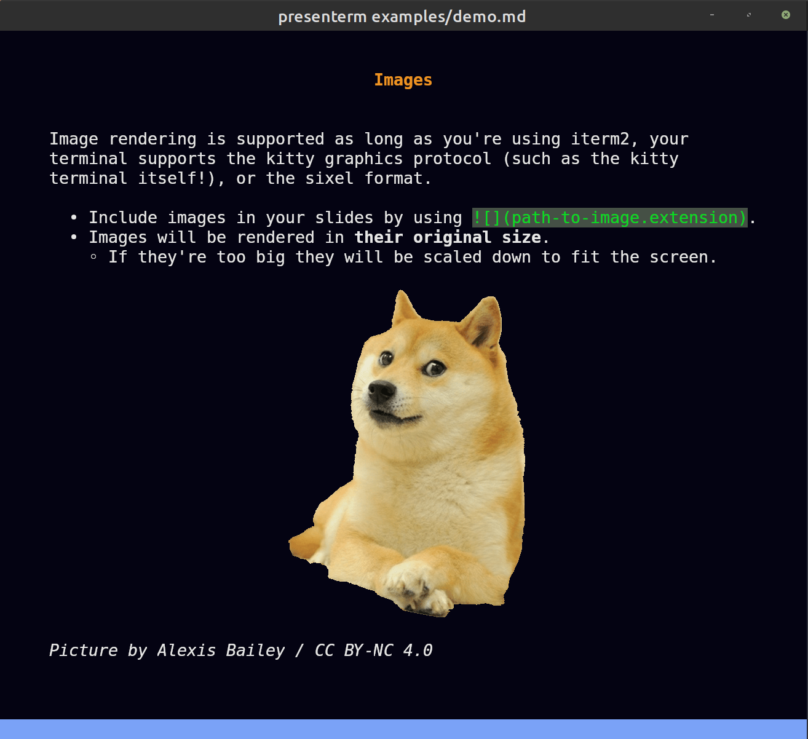
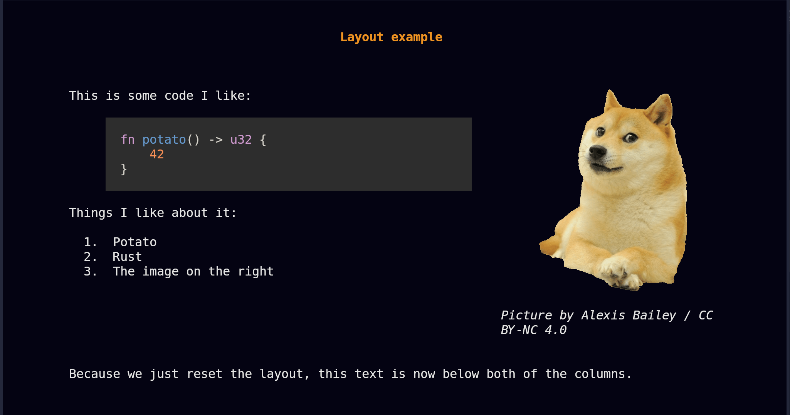

presenterm
presenterm lets you create presentations in markdown format and run them from your terminal, with support for image and animated gif support, highly customizable themes, code highlighting, exporting presentations into PDF format, and plenty of other features.
Demo
This is how the demo presentation looks like:

A few other example presentations can be found here.
Installation
presenterm works on Linux, macOS, and Windows and can be installed in different ways:
Pre-built binaries (recommended)
The recommended way to install presenterm is to download the latest pre-built version for your system from the releases page.
Install via cargo
Alternatively, download rust and run:
cargo install --locked presenterm
Latest unreleased version
To install from the latest source code run:
cargo install --git https://github.com/mfontanini/presenterm
macOS
Install the latest version in macOS via brew by running:
brew install presenterm
Nix
To install presenterm using the Nix package manager run:
nix-env -iA nixos.presenterm # for nixos
nix-env -iA nixpkgs.presenterm # for non-nixos
Or, you can install it by adding the following to your configuration.nix if you are on NixOS
environment.systemPackages = [
pkgs.presenterm
];
Alternatively if you're a Nix user using flakes you can run:
nix run nixpkgs#presenterm # to run from nixpkgs
nix run github:mfontanini/presenterm # to run from github repo
For more information see nixpkgs
Arch Linux
presenterm is available in the official repositories. You can use pacman to install as follows:
pacman -S presenterm
Binary release
Alternatively, you can use any AUR helper to install the upstream binaries:
paru/yay -S presenterm-bin
Building from git
paru/yay -S presenterm-git
Windows
Install the latest version in Scoop via Scoop by running:
scoop install presenterm
Introduction
This guide teaches you how to use presenterm. At this point you should have already installed presenterm, otherwise visit the installation guide to get started.
Quick start
Download the demo presentation and run it using:
git clone https://github.com/mfontanini/presenterm.git
cd presenterm
presenterm examples/demo.md
Presentations
A presentation in presenterm is a single markdown file. Every slide in the presentation file is delimited by a line that contains a single HTML comment:
<!-- end_slide -->
Presentations can contain most commonly used markdown elements such as ordered and unordered lists, headings, formatted
text (bold, italics, strikethrough, inline code, etc), code blocks, block quotes, tables, etc.
Images

Images are supported and will render in your terminal as long as it supports either the iterm2 image protocol, the kitty graphics protocol, or sixel. Some of the terminals where at least one of these is supported are:
- kitty
- iterm2
- wezterm
- foot
Note that sixel support is experimental so it needs to be explicitly enabled via the sixel configuration flag:
cargo build --release --features sixel
Note: this feature flag is only needed if your terminal emulator only supports sixel. Many terminals support the kitty or iterm2 protocols so this isn't necessary.
Things you should know when using image tags in your presentation's markdown are:
- Image paths are relative to your presentation path. That is a tag like
will be looked up at$PRESENTATION_DIRECTORY/food/potato.png. - Images will be rendered by default in their original size. That is, if your terminal is 300x200px and your image is 200x100px, it will take up 66% of your horizontal space and 50% of your vertical space.
- The exception to the point above is if the image does not fit in your terminal, it will be resized accordingly while preserving the aspect ratio.
- If your terminal does not support any of the graphics protocol above, images will be rendered using ascii blocks. It ain't great but it's something!
Image size
The size of each image can be set by using the image:width or image:w attributes in the image tag. For example, the
following will cause the image to take up 50% of the terminal width:

The image will always be scaled to preserve its aspect ratio and it will not be allowed to overflow vertically nor horizontally.
Protocol detection
By default the image protocol to be used will be automatically detected. In cases where this detection fails (e.g. when
running inside tmux), you can set it manually via the --image-protocol parameter or by setting it in the config
file.
Extensions
Besides the standard markdown elements, presenterm supports a few extensions.
Introduction slide
By setting a front matter at the beginning of your presentation, you can configure the title, sub title, and author of your presentation and implicitly create an introduction slide:
---
title: My first presentation
sub_title: (in presenterm!)
author: Myself
---
All of these attributes are optional so you're not forced to set them all.
Multiple authors
If you're creating a presentation in which there's multiple authors, you can use the authors key instead of author
and list them all this way:
---
title: Our first presentation
authors:
- Me
- You
---
Slide titles
Any setext header will be considered to be a slide title and will be rendered in a more slide-title-looking way. By default this means it will be centered, some vertical padding will be added and the text color will be different.
Hello
===
Note: see the themes section on how to customize the looks of slide titles and any other element in a presentation.
Pauses
Pauses allow the sections of the content in your slide to only show up when you advance in your presentation. That is,
only after you press, say, the right arrow will a section of the slide show up. This can be done by the pause comment
command:
<!-- pause -->
Ending slides
While other applications use a thematic break (---) to mark the end of a slide, presenterm uses a special
end_slide HTML comment:
<!-- end_slide -->
This makes the end of a slide more explicit and easy to spot while you're editing your presentation. See the configuration if you want to customize this behavior.
If you really would prefer to use thematic breaks (---) to delimit slides, you can do that by enabling the
end_slide_shorthand options.
Jumping to the vertical center
The command jump_to_vertical_center lets you jump to the middle of the page vertically. This is useful in combination
with slide titles to create separator slides:
blablabla
<!-- end_slide -->
<!-- jump_to_middle -->
Farming potatoes
===
<!-- end_slide -->
This will create a slide with the text "Farming potatoes" in the center, rendered using the slide title style.
Explicit new lines
The newline/new_line and newlines/new_lines commands allow you to explicitly create new lines. Because markdown
ignores multiple line breaks in a row, this is useful to create some spacing where necessary:
hi
<!-- new_lines: 10 -->
mom
<!-- new_line -->
bye
Incremental lists
Using <!-- pause --> in between each bullet point a list is a bit tedious so instead you can use the
incremental_lists command to tell presenterm that until the end of the current slide you want each individual
bullet point to appear only after you move to the next slide:
<!-- incremental_lists: true -->
* this
* appears
* one after
* the other
<!-- incremental_lists: false -->
* this appears
* all at once
Key bindings
Navigation within a presentation should be intuitive: jumping to the next/previous slide can be done by using the arrow keys, hjkl, and page up/down keys.
Besides this:
- Jumping to the first slide:
gg. - Jumping to the last slide:
G. - Jumping to a specific slide:
<slide-number>G. - Exit the presentation:
<ctrl>c.
Configuring key bindings
If you don't like the default key bindings, you can override them in the configuration file.
Modals
presenterm currently has 2 modals that can provide some information while running the application. Modals can be toggled using some key combination and can be hidden using the escape key by default, but these can be configured via the configuration file key bindings.
Slide index modal
This modal can be toggled by default using control+p and lets you see an index that contains a row for every slide in
the presentation, including its title and slide index. This allows you to find a slide you're trying to jump to
quicklier rather than scanning through each of them.

Key bindings modal
The key bindings modal displays the key bindings for each of the supported actions.
Hot reload
Unless you run in presentation mode by passing in the --present parameter, presenterm will automatically reload your
presentation file every time you save it. presenterm will also automatically detect which specific slide was modified
and jump to it so you don't have to be jumping back and forth between the source markdown and the presentation to see
how the changes look like.

Themes
Themes are defined in the form of yaml files. A few built-in themes are defined in the themes directory, but others can be created and referenced directly in every presentation.
Setting themes
There's various ways of setting the theme you want in your presentation:
CLI
Passing in the --theme parameter when running presenterm to select one of the built-in themes.
Within the presentation
The presentation's markdown file can contain a front matter that specifies the theme to use. This comes in 3 flavors:
By name
Using a built-in theme name makes your presentation use that one regardless of what the default or what the --theme
option specifies:
---
theme:
name: dark
---
By path
You can define a theme file in yaml format somewhere in your filesystem and reference it within the presentation:
---
theme:
path: /home/me/Documents/epic-theme.yaml
---
Overrides
You can partially/completely override the theme in use from within the presentation:
---
theme:
override:
default:
colors:
foreground: "beeeff"
---
This lets you:
- Create a unique style for your presentation without having to go through the process of taking an existing theme, copying somewhere, and changing it when you only expect to use it for that one presentation.
- Iterate quickly on styles given overrides are reloaded whenever you save your presentation file.
Built-in themes
A few built-in themes are bundled with the application binary, meaning you don't need to have any external files available to use them. These are packed as part of the build process as a binary blob and are decoded on demand only when used.
Currently, the following themes are supported:
dark: A dark theme.light: A light theme.tokyonight-storm: A theme inspired by the colors used in toyonight.- A set of themes based on the catppuccin color palette:
catppuccin-lattecatppuccin-frappecatppuccin-macchiatocatppuccin-mocha
terminal-dark: A theme that uses your terminals color and looks best if your terminal uses a dark color scheme. This means if your terminal background is e.g. transparent, or uses an image, the presentation will inherit that.terminal-light: The same asterminal-darkbut works best if your terminal uses a light color scheme.
Trying out built-in themes
All built-in themes can be tested by using the --list-themes parameter:
presenterm --list-themes
This will run a presentation where the same content is rendered using a different theme in each slide:

Loading custom themes
On startup, presenterm will look into the themes directory under the configuration directory
(e.g. ~/.config/presenterm/themes in Linux) and will load any .yaml file as a theme and make it available as if it
was a built-in theme. This means you can use it as an argument to the --theme parameter, use it in the theme.name
property in a presentation's front matter, etc.
Theme definition
This section goes through the structure of the theme files. Have a look at some of the existing themes to have an idea of how to structure themes.
Root elements
The root attributes on the theme yaml files specify either:
- A specific type of element in the input markdown or rendered presentation. That is, the slide title, headings, footer, etc.
- A default to be applied as a fallback if no specific style is specified for a particular element.
Alignment
presenterm uses the notion of alignment, just like you would have in a GUI editor, to align text to the left, center, or right. You probably want most elements to be aligned left, some to be aligned on the center, and probably none to the right (but hey, you're free to do so!).
The following elements support alignment:
- Code blocks.
- Slide titles.
- The title, subtitle, and author elements in the intro slide.
- Tables.
Left/right alignment
Left and right alignments take a margin property which specifies the number of columns to keep between the text and the left/right terminal screen borders.
The margin can be specified in two ways:
Fixed
A specific number of characters regardless of the terminal size.
alignment: left
margin:
fixed: 5
Percent
A percentage over the total number of columns in the terminal.
alignment: left
margin:
percent: 8
Percent alignment tends to look a bit nicer as it won't change the presentation's look as much when the terminal size changes.
Center alignment
Center alignment has 2 properties:
minimum_sizewhich specifies the minimum size you want that element to have. This is normally useful for code blocks as they have a predefined background which you likely want to extend slightly beyond the end of the code on the right.minimum_marginwhich specifies the minimum margin you want, using the same structure asmarginfor left/right alignment. This doesn't play very well withminimum_sizebut in isolation it specifies the minimum number of columns you want to the left and right of your text.
Colors
Every element can have its own background/foreground color using hex notation:
default:
colors:
foreground: "ff0000"
background: "00ff00"
Default style
The default style specifies:
- The margin to be applied to all slides.
- The colors to be used for all text.
default:
margin:
percent: 8
colors:
foreground: "e6e6e6"
background: "040312"
Intro slide
The introductory slide will be rendered if you specify a title, subtitle, or author in the presentation's front matter. This lets you have a less markdown-looking introductory slide that stands out so that it doesn't end up looking too monotonous:
---
title: Presenting from my terminal
sub_title: Like it's 1990
author: John Doe
---
The theme can specify:
- For the title and subtitle, the alignment and colors.
- For the author, the alignment, colors, and positioning (
page_bottomandbelow_title). The first one will push it to the bottom of the screen while the second one will put it right below the title (or subtitle if there is one)
For example:
intro_slide:
title:
alignment: left
margin:
percent: 8
author:
colors:
foreground: black
positioning: below_title
Footer
The footer currently comes in 3 flavors:
None
No footer at all!
footer:
style: empty
Progress bar
A progress bar that will advance as you move in your presentation. This will by default use a block-looking character to draw the progress bar but you can customize it:
footer:
style: progress_bar
# Optional!
character: 🚀
Template
A template footer that lets you put something on the left, center and/or right of the screen. The template strings have
access to {author} as specified in the front matter, {current_slide} and {total_slides} which will point to the
current and total number of slides:
footer:
style: template
left: "My name is {author}"
center: @myhandle
right: "{current_slide} / {total_slides}"
Slide title
Slide titles, as specified by using a setext header, has the following properties:
padding_topwhich specifies the number of rows you want as padding before the text.padding_bottomwhich specifies the number of rows you want as padding after the text.separatorwhich specifies whether you want a horizontal ruler after the text (and thepadding_bottom):
slide_title:
padding_bottom: 1
padding_top: 1
separator: true
Headings
Every header type (h1 through h6) can have its own style composed of:
- The prefix you want to use.
- The colors, just like any other element:
headings:
h1:
prefix: "██"
colors:
foreground: "rgb_(48,133,195)"
h2:
prefix: "▓▓▓"
colors:
foreground: "rgb_(168,223,142)"
Code blocks
The syntax highlighting for code blocks is done via the syntect crate. The list of all the supported built-in syntect themes is the following:
- base16-ocean.dark
- base16-eighties.dark
- base16-mocha.dark
- base16-ocean.light
- InspiredGitHub
- Solarized (dark)
- Solarized (light)
Besides those and thanks to the work done on the awesome bat tool, presenterm has
access to not only the built-in syntect's built-in themes but also the ones in bat. Run bat --list-themes to see a
list of all of them.
Code blocks can also have an optional vertical and horizontal padding so your code is not too close to its bounding rectangle:
code:
theme_name: base16-eighties.dark
padding:
horizontal: 2
vertical: 1
Custom highlighting themes
Besides the built-in highlighting themes, you can drop any .tmTheme theme in the themes/highlighting directory under
your configuration directory (e.g. ~/.config/presenterm/themes/highlighting in Linux) and they
will be loaded automatically when presenterm starts.
Block quotes
For block quotes you can specify a string to use as a prefix in every line of quoted text:
block_quote:
prefix: "▍ "
Mermaid
The mermaid graphs can be customized using the following parameters:
mermaid.backgroundthe background color passed to the CLI (e.g.,transparent,red,#F0F0F0).mermaid.themethe mermaid theme to use.
mermaid:
background: transparent
theme: dark
Extending themes
Custom themes can extend other custom or built in themes. This means it will inherit all the properties of the theme being extended by default.
For example:
extends: dark
default:
colors:
background: "000000"
This theme extends the built in dark theme and overrides the background color. This is useful if you find yourself almost liking a built in theme but there's only some properties you don't like.
Layouts
presenterm currently supports a column layout that lets you split parts of your slides into column. This allows you to put text on one side, and code/images on the other, or really organize markdown into columns in any way you want.
This is done by using commands, just like pause and end_slide, in the form of HTML comments. This section describes
how to use those.
Wait, why not HTML?
While markdown can contain HTML tags (beyond comments!) and we could represent this using divs with alignment, I don't really want to:
- Deal with HTML and all the implications this would have. e.g. nesting many divs together and all the chaos that would bring to the rendering code.
- Require people to write HTML when we have such a narrow use-case for it here: we only want column layouts.
Because of this, presenterm doesn't let you use HTML and instead has a custom way of specifying column layouts.
Column layout
The way to specify column layouts is by first creating a layout, and then telling presenterm you want to enter each of the column in it as you write your presentation.
Defining layouts
Defining a layout is done via the column_layout command, in the form of an HTML comment:
<!-- column_layout: [3, 2] -->
This defines a layout with 2 columns where:
- The total number of "size units" is
3 + 2 = 5. You can think of this as the terminal screen being split into 5 pieces vertically. - The first column takes 3 out of those 5 pieces/units, or in other words 60% of the terminal screen.
- The second column takes 2 out of those 5 pieces/units, or in other words 40% of the terminal screen.
You can use any number of columns and with as many units you want on each of them. This lets you decide how to structure the presentation in a fairly straightforward way.
Using columns
Once a layout is defined, you just need to specify that you want to enter a column before writing any text to it by
using the column command:
<!-- column: 0 -->
Now all the markdown you write will be placed on the first column until you either:
- Reset the layout by using the
reset_layoutcommand. - The slide ends.
- You jump into another column by using the
columncommand again.
Example
The following example puts all of this together by defining 2 columns, one with some code and bullet points, another one with an image, and some extra text at the bottom that's not tied to any columns.
Layout example
==============
<!-- column_layout: [2, 1] -->
<!-- column: 0 -->
This is some code I like:
```rust
fn potato() -> u32 {
42
}
```
Things I like about it:
1. Potato
2. Rust
3. The image on the right
<!-- column: 1 -->

_Picture by Alexis Bailey / CC BY-NC 4.0_
<!-- reset_layout -->
Because we just reset the layout, this text is now below both of the columns.
This would render the following way:

Other uses
Besides organizing your slides into columns, you can use column layouts to center a piece of your slide. For example, if
you want a certain portion of your slide to be centered, you could define a column layout like [1, 3, 1] and then only
write content into the middle column. This would make your content take up the center 60% of the screen.
Configuration
presenterm allows you to customize its behavior via a configuration file. This file is stored, along with all of your custom themes, in the following directories:
$XDG_CONFIG_HOME/presenterm/if that environment variable is defined, otherwise:~/.config/presenterm/in Linux.~/Library/Application Support/presenterm/in macOS.~/AppData/Roaming/presenterm/config/in Windows.
The configuration file will be looked up automatically in the directories above under the name config.yaml. e.g. on
Linux you should create it under ~/.config/presenterm/config.yaml. You can also specify a custom path to this file
when running presenterm via the --config-path parameter.
A sample configuration file is provided in the repository that you can use as a base.
Options
Options are special configuration parameters that can be set either in the configuration file under the options key,
or in a presentation's front matter under the same key. This last one allows you to customize a single presentation so
that it acts in a particular way. This can also be useful if you'd like to share the source files for your presentation
with other people.
The supported configuration options are currently the following:
implicit_slide_ends
This option removes the need to use <!-- end_slide --> in between slides and instead assumes that if you use a slide
title, then you're implying that the previous slide ended. For example, the following presentation:
---
options:
implicit_slide_ends: true
---
Tasty vegetables
================
* Potato
Awful vegetables
================
* Lettuce
Is equivalent to this "vanilla" one that doesn't use implicit slide ends.
Tasty vegetables
================
* Potato
<!-- end_slide -->
Awful vegetables
================
* Lettuce
end_slide_shorthand
This option allows using thematic breaks (---) as a delimiter between slides. When enabling this option, you can still
use <!-- end_slide --> but any thematic break will also be considered a slide terminator.
---
options:
end_slide_shorthand: true
---
this is a slide
---------------------
this is another slide
command_prefix
Because presenterm uses HTML comments to represent commands, it is necessary to make some assumptions on what is a command and what isn't. The current heuristic is:
- If an HTML comment is laid out on a single line, it is assumed to be a command. This means if you want to use a real
HTML comment like
<!-- remember to say "potato" here -->, this will raise an error. - If an HTML comment is multi-line, then it is assumed to be a comment and it can have anything inside it. This means
you can't have a multi-line comment that contains a command like
pauseinside.
Depending on how you use HTML comments personally, this may be limiting to you: you cannot use any single line comments
that are not commands. To get around this, the command_prefix option lets you configure a prefix that must be set in
all commands for them to be configured as such. Any single line comment that doesn't start with this prefix will not be
considered a command.
For example:
---
options:
command_prefix: "cmd:"
---
<!-- remember to say "potato here" -->
Tasty vegetables
================
* Potato
<!-- cmd:pause -->
**That's it!**
In the example above, the first comment is ignored because it doesn't start with "cmd:" and the second one is processed because it does.
incremental_lists
If you'd like all bullet points in all lists to show up with pauses in between you can enable the incremental_lists
option:
---
options:
incremental_lists: true
---
* pauses
* in
* between
Keep in mind if you only want specific bullet points to show up with pauses in between, you can use the
incremental_lists comment command.
strict_front_matter_parsing
This option tells presenterm you don't care about extra parameters in presentation's front matter. This can be useful
if you're trying to load a presentation made for another tool. The following presentation would only be successfully
loaded if you set strict_front_matter_parsing to false in your configuration file:
---
potato: 42
---
# Hi
image_attributes_prefix
The image size prefix (by default image:) can be configured to be anything you would want in
case you don't like the default one. For example, if you'd like to set the image size by simply doing
 you would need to set:
---
options:
image_attributes_prefix: ""
---

Defaults
Defaults can only be configured via the configuration file.
Default theme
The default theme can be configured only via the config file. When this is set, every presentation that doesn't set a theme explicitly will use this one:
defaults:
theme: light
Terminal font size
This is a parameter that lets you explicitly set the terminal font size in use. This should not be used unless you are in Windows, given there's no (easy) way to get the terminal window size so we use this to figure out how large the window is and resize images properly. Some terminals on other platforms may also have this issue, but that should not be as common.
If you are on Windows or you notice images show up larger/smaller than they should, you can adjust this setting in your config file:
defaults:
terminal_font_size: 16
Preferred image protocol
By default presenterm will try to detect which image protocol to use based on the terminal you are using. In some
cases this may fail, for example when using tmux. In those cases, you can explicitly set this via the
--image-protocol parameter or the configuration key defaults.image_protocol:
defaults:
image_protocol: kitty-local
Possible values are:
auto: try to detect it automatically (default).kitty-local: use the kitty protocol in "local" mode, meaning both presenterm and the terminal run in the same host and can share the filesystem to communicate.kitty-remote: use the kitty protocol in "remote" mode, meaning presenterm and the terminal run in different hosts and therefore can only communicate via terminal escape codes.iterm2: use the iterm2 protocol.sixel: use the sixel protocol. Note that this requires compiling presenterm using the--features sixelflag.
Key bindings
Key bindings that presenterm uses can be manually configured in the config file via the bindings key. The following
is the default configuration:
bindings:
# the keys that cause the presentation to move forwards.
next: ["l", "j", "<right>", "<page_down>", "<down>", " "]
# the keys that cause the presentation to move backwards.
previous: ["h", "k", "<left>", "<page_up>", "<up>"]
# the key binding to jump to the first slide.
first_slide: ["gg"]
# the key binding to jump to the last slide.
last_slide: ["G"]
# the key binding to jump to a specific slide.
go_to_slide: ["<number>G"]
# the key binding to execute a piece of shell code.
execute_code: ["<c-e>"]
# the key binding to reload the presentation.
reload: ["<c-r>"]
# the key binding to toggle the slide index modal.
toggle_slide_index: ["<c-p>"]
# the key binding to toggle the key bindings modal.
toggle_bindings: ["?"]
# the key binding to close the currently open modal.
close_modal: ["<esc>"]
# the key binding to close the application.
exit: ["<c-c>", "q"]
You can choose to override any of them. Keep in mind these are overrides so if for example you change next, the
default won't apply anymore and only what you've defined will be used.
Snippet configurations
Snippet execution
Snippet execution is disabled by default for security reasons. Besides passing in the -x command line parameter every
time you run presenterm, you can also configure this globally for all presentations by setting:
snippet:
exec:
enable: true
Use this at your own risk, especially if you're running someone else's presentations!
Custom snippet executors
If presenterm doesn't support executing code snippets for your language of choice, please create an issue! Alternatively, you can configure this locally yourself by setting:
snippet:
exec:
custom:
# The keys should be the language identifier you'd use in a code block.
c++:
# The name of the file that will be created with your snippet's contents.
filename: "snippet.cpp"
# A list of environment variables that should be set before building/running your code.
environment:
MY_FAVORITE_ENVIRONMENT_VAR: foo
# A list of commands that will be ran one by one in the same directory as the snippet is in.
commands:
# Compile if first
- ["g++", "-std=c++20", "snippet.cpp", "-o", "snippet"]
# Now run it
- ["./snippet"]
The output of all commands will be included in the code snippet execution output so if a command (like the g++
invocation) was to emit any output, make sure to use whatever flags are needed to mute its output.
Also note that you can override built-in executors in case you want to run them differently (e.g. use c++23 in the
example above).
See more examples in the executors.yaml file which defines all of the built-in executors.
Snippet rendering threads
Because some +render code blocks can take some time to be rendered into an image, especially if you're using
mermaid charts, this is run asychronously. The number of threads used to render these, which
defaults to 2, can be configured by setting:
snippet:
render:
threads: 2
Mermaid scaling
mermaid graphs will use a default scaling of 2 when invoking the mermaid CLI. If you'd like
to change this use:
mermaid:
scale: 2
Code highlighting
Code highlighting is supported for the following languages:
- ada
- asp
- awk
- bash
- batchfile
- C
- cmake
- crontab
- C#
- clojure
- C++
- CSS
- D
- diff
- docker
- dotenv
- elixir
- elm
- erlang
- go
- haskell
- HTML
- java
- javascript
- json
- kotlin
- latex
- lua
- makefile
- markdown
- nix
- ocaml
- perl
- php
- protobuf
- puppet
- python
- R
- ruby
- rust
- scala
- shell
- sql
- swift
- svelte
- terraform
- typescript
- xml
- yaml
- vue
- zig
Enabling line numbers
If you would like line numbers to be shown on the left of a code block use the +line_numbers switch after specifying
the language in a code block:
```rust +line_numbers
fn hello_world() {
println!("Hello world");
}
```
Selective highlighting
By default, the entire code block will be syntax-highlighted. If instead you only wanted a subset of it to be highlighted, you can use braces and a list of either individual lines, or line ranges that you'd want to highlight.
```rust {1,3,5-7}
fn potato() -> u32 { // 1: highlighted
// 2: not highlighted
println!("Hello world"); // 3: highlighted
let mut q = 42; // 4: not highlighted
q = q * 1337; // 5: highlighted
q // 6: highlighted
} // 7: highlighted
```
Dynamic highlighting
Similar to the syntax used for selective highlighting, dynamic highlighting will change which lines of the code in a code block are highlighted every time you move to the next/previous slide.
This is achieved by using the separator | to indicate what sections of the code will be highlighted at a given time.
You can also use all to highlight all lines for a particular frame.
```rust {1,3|5-7}
fn potato() -> u32 {
println!("Hello world");
let mut q = 42;
q = q * 1337;
q
}
```
In this example, lines 1 and 3 will be highlighted initially. Then once you press a key to move to the next slide, lines 1 and 3 will no longer be highlighted and instead lines 5 through 7 will. This allows you to create more dynamic presentations where you can display sections of the code to explain something specific about each of them.
See this real example of how this looks like.

Executing code blocks
Annotating a code block with a +exec attribute will make it executable. Once you're in a slide that contains an
executable block, press control+e to execute it. The output of the execution will be displayed on a box below the
code. The code execution is stateful so if you switch to another slide and then go back, you will still see the output.
```bash +exec
echo hello world
```
Code execution must be explicitly enabled by using either:
- The
-xcommand line parameter when running presenterm. - Setting the
snippet.exec.enableproperty totruein your presenterm config file.
The list of languages that support execution are:
- bash
- c++
- c
- fish
- go
- java
- js
- kotlin
- lua
- nushell
- perl
- python
- ruby
- rust-script
- rust
- sh
- zsh
If there's a language that is not in this list and you would like it to be supported, please create an issue providing details on how to compile (if necessary) and run snippets for that language. You can also configure how to run code snippet for a language locally in your config file.

Note: because this is spawning a process and executing code, you should use this at your own risk.
Hiding code lines
When you mark a code snippet as executable via the +exec flag, you may not be interested in showing all the lines to
your audience, as some of them may not be necessary to convey your point. For example, you may want to hide imports,
non-essential functions, initialization of certain variables, etc. For this purpose, presenterm supports a prefix
under certain programming languages that let you indicate a line should be executed when running the code but should not
be displayed in the presentation.
For example, in the following code snippet only the print statement will be displayed but the entire snippet will be ran:
```rust
# fn main() {
println!("Hello world!");
# }
```
Rather than blindly relying on a prefix that may have a meaning in a language, prefixes are chosen on a per language basis. The languages that are supported and their prefix is:
- rust:
#. - python/bash/fish/shell/zsh/kotlin/java/javascript/typescript/c/c++/go:
///.
This means that any line in a rust code snippet that starts with # will be hidden, whereas all lines in, say, a
golang code snippet that starts with a /// will be hidden.
Pre-rendering
Some languages support pre-rendering. This means the code block is transformed into something else when the presentation
is loaded. The languages that currently support this are LaTeX and typst where the contents of the code block is
transformed into an image, allowing you to define formulas as text in your presentation. This can be done by using the
+render attribute on a code block.
See the LaTeX and typst and mermaid docs for more information.
PDF export
Presentations can be converted into PDF by using a helper tool. You can install it by running:
pip install presenterm-export
Note: make sure that
presenterm-exportworks by runningpresenterm-export --versionbefore attempting to generate a PDF file. If you get errors related to weasyprint, follow their installation instructions to ensure you meet all of their dependencies. This has otherwise caused issues in macOS.
The only external dependency you'll need is tmux. After you've installed both of these,
simply run presenterm with the --export-pdf parameter to generate the output PDF:
presenterm --export-pdf examples/demo.md
The output PDF will be placed in examples/demo.pdf. The size of each page will depend on the size of your terminal so
make sure to adjust accordingly before running the command above.
Note: if you're using a separate virtual env to install presenterm-export just make sure you activate it before running presenterm with the
--export-pdfparameter.
How it works
The conversion into PDF format is pretty convoluted. If you'd like to learn more visit presenterm-export's repo.
Mermaid
mermaid snippets can be converted into images automatically in any code snippet tagged with
the mermaid language and a +render tag:
```mermaid +render
sequenceDiagram
Mark --> Bob: Hello!
Bob --> Mark: Oh, hi mark!
```
This requires having mermaid-cli installed.
Note that because the mermaid CLI will spin up a browser under the hood, this may not work in all environments and can also be a bit slow (e.g. ~2 seconds to generate every image). Mermaid graphs are rendered asynchronously by a number of threads that can be configured in the configuration file. This configuration value currently defaults to 2.
The size of the rendered image can be configured by changing:
- The
mermaid.scaleconfiguration parameter. - Using the
+width:<number>%attribute in the code snippet.
For example, this diagram will take up 50% of the width of the window and will preserve its aspect ratio:
```mermaid +render +width:50%
sequenceDiagram
Mark --> Bob: Hello!
Bob --> Mark: Oh, hi mark!
```
It is recommended to change the mermaid.scale parameter until images look big enough and then adjust on an image by
image case if necessary using the +width attribute. Otherwise, using a small scale and then scaling via +width may
cause the image to become blurry.
Theme
The theme of the rendered mermaid diagrams can be changed through the following theme parameters:
mermaid.backgroundthe background color passed to the CLI (e.g.,transparent,red,#F0F0F0).mermaid.themethe mermaid theme to use.
LaTeX and typst
latex and typst code blocks can be marked with the +render attribute (see highlighting) to
have them rendered into images when the presentation is loaded. This allows you to define formulas in text rather than
having to define them somewhere else, transform them into an image, and them embed it.
Dependencies
typst
The engine used to render both of these languages is typst. typst is easy to install, lightweight, and boilerplate free as compared to LaTeX.
pandoc
For LaTeX code rendering, besides typst you will need to install pandoc. How this works is the LaTeX code you write gets transformed into typst code via pandoc and then rendered by using typst. This lets us:
- Have the same look/feel on generated formulas for both languages.
- Avoid having to write lots of boilerplate LaTeX to make rendering for that language work.
- Have the same logic to render formulas for both languages, except with a small preparation step for LaTeX.
Controlling PPI
presenterm lets you define how many Pixels Per Inch (PPI) you want in the generated images. This is important because as opposed to images that you manually include in your presentation, where you control the exact dimensions, the images generated on the fly will have a fixed size. Configuring the PPI used during the conversion can let you adjust this: the higher the PPI, the larger the generated images will be.
Because as opposed to most configurations this is a very environment-specific config, the PPI parameter is not part of the theme definition but is instead has to be set in presenterm's config file:
typst:
ppi: 400
The default is 300 so adjust it and see what works for you.
Image paths
If you're including an image inside a typst snippet, you must:
- Use absolute paths, e.g.
#image("/image1.png"). - Place the image in the same or a sub path of the path where the presentation is. That is, if your presentation file is
at
/tmp/foo/presentation.md, you can place images in/tmp/foo, and/tmp/foo/barbut not under/tmp/bar. This is because of the absolute path rule above: the path will be considered to be relative to the presentation file's directory.
Controlling the image size
You can also set the generated image's size on a per code snippet basis by using the +width modifier which specifies
the width of the image as a percentage of the terminal size.
```typst +render +width:50%
$f(x) = x + 1$
```
Customizations
The colors and margin of the generated images can be defined in your theme:
typst:
colors:
background: ff0000
foreground: 00ff00
# In points
horizontal_margin: 2
vertical_margin: 2
Example
The following example:
# Formulas
```latex +render
\[ \sum_{n=1}^{\infty} 2^{-n} = 1 \]
```
Is rendered like this:

Parsing and rendering
This document goes through the internals of how we take a markdown file and finish rendering it into the terminal screen.
Parsing
Markdown file parsing is done via the comrak crate. This crate parses the markdown file and gives you back an AST that contains the contents and structure of the input file.
ASTs are a logical way of representing the markdown file but this structure makes it a bit hard to process. Given our
ultimate goal is to render this input, we want it to be represented in a way that facilitates that. Because of this we
first do a pass on this AST and construct a list of MarkdownElements. This enum represents each of the markdown
elements in a flattened, non-recursive, way:
- Inline text is flattened so that instead of having a recursive structure you have chunks of text, each with their own
style. So for example the text "hello my name is
bob" which would look like a 3 level tree (I think?) in the AST, gets transformed to something like[Bold(hello), ItalicsBold(my name is), ItalicsBoldStrikethrough(bob)](names are completely not what they are in the code, this is just to illustrate flattening). This makes it much easier to render text because we don't need to walk the tree and keep the state between levels. - Lists are flattened into a single
MarkdownElement::Listelement that contains a list of items that contain their text, prefix ("*" for bullet lists), and nesting depth. This also simplifies processing as list elements can also contain formatted text so we would otherwise have the same problem as above.
This first step then produces a list of elements that can easily be processed.
Building the presentation
The format above is nicer than an AST but it's still not great to be used as the input to the code that renders the presentation for various reasons:
- The presentation needs to be styled, which means we need to apply a theme on top of it to transform it. Putting this responsibility in the render code creates too much coupling: now the render needs to understand markdown and how themes work.
- The render code tends to be a bit annoying: we need to jump around in the screen, print text, change colors, etc. If we add the responsibility of transforming the markdown into visible text to the render code itself, we end up having a mess of UI code mixed with the markdown element processing.
- Some elements can't be printed as-is. For example, a list item has text and a prefix, so we don't want the render code to be in charge of understanding and executing those transformations.
Because of this, we introduce a step in between parsing and rendering where we build a presentation. A presentation is made up of a list of slides and each slide is made up of render operations. Render operations are the primitives that the render code understands to print text on the screen. These can be the following, among others:
- Render text.
- Clear the screen.
- Set the default colors to be used.
- Render a line break.
- Jump to the middle of the screen.
This allows us to have a simple model where the logic that takes markdown elements and a theme and chooses how it will be rendered is in one place, and the logic that takes those instructions and executes them is elsewhere. So for example, this step will take a bullet point and concatenate is suffix ("*" for bullet points for example), turn that into a single string and generate a "render text" operation.
This has the nice added bonus that the rendering code doesn't have to be fiddling around with string concatenation or other operations that could take up CPU cycles: it just takes these render operations and executes them. Not that performance matters here but it's nice to get better performance for free.
Render a slide
The rendering code is straightforward and simply takes the current slide, iterates all of its rendering operations, and executes those one by one. This is done via the crossterm crate.
The only really complicated part is fitting text into the screen. Because we apply our own margins, we perform word splitting and wrapping around manually, so there's some logic that takes the text to be printed and the width of the terminal and splits it accordingly.
Note that this piece of code is the only one aware of the current screen size. This lets us forget in previous steps about how large the screen is and simply delegate that responsibility to this piece.
Entire flow

Acknowledgements
This tool is heavily inspired by:
Support for code highlighting on many languages is thanks to bat, which contains a
custom set of syntaxes that extend syntect's default set of supported languages.
Run presenterm --acknowledgements to get a full list of all the licenses for the binary files being pulled in.
Contributors
Thanks to everyone who's contributed to presenterm in one way or another! This is a list of the users who have contributed code to make presenterm better in some way: